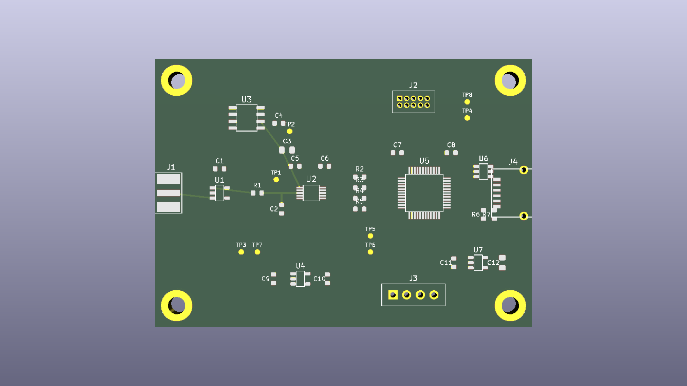

PCB Floorplan

Place MixedSignal_DAQ_pcb.png in the same folder as index.html or load it locally below.
Schematic
4-Layer Stackup
| Layer | Copper | Function |
|---|---|---|
| F.Cu (L1) | 1 oz | All SMD components, 0.30 mm zero-via analog path, 0.20 mm SPI bus |
| In1.Cu (L2) | 0.5 oz | Solid, unbroken GND reference plane |
| In2.Cu (L3) | 0.5 oz | Split power pours (+3V3_ANA left half, +3V3_DIG right half) |
| B.Cu (L4) | 1 oz | Secondary routing and ground stitching |
Design Notes
-
Spatial Partitioning over Solid Ground: Analog components (
J1,U1–U4) are confined to the left half (0–35 mm) and digital components (U5–U7,J2–J4) to the right half (35–70 mm) over one unbrokenIn1.CuGND plane to avoid split-plane slot antennas. -
SAR ADC Kickback Filter: A
33 Ωresistor and2.7 nFC0G/NP0 capacitor (R1,C2) sit directly at theAD7685IN+pin to absorb switched-capacitor sampling spikes without X7R voltage-coefficient distortion. -
Reference Reservoir: A
10 μFlow-ESR ceramic capacitor (C3) is placed adjacent to theAD7685REFpin to supply bit-trial current spikes from theREF5025without voltage droop. -
SPI Edge Control:
22 Ωseries damping resistors (R2–R5) onSCK,MISO,MOSI, andCNVreduce ringing and limit digital-to-analog crosstalk. -
Benchtop Probing (DFT): Eight
1.0 mmSMD test pads (TP1–TP8) are paired with local GND pads for short-loop oscilloscope ground-spring measurements.
Bill of Materials
| Ref | Part / Spec | Package | LCSC | Qty | Function |
|---|